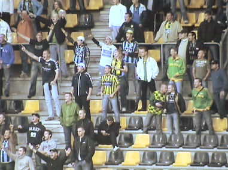

|
Roda JC - ADO Den Haag (1-0) 25 augustus 2006
|
Veel niet-betalende toeschouwers verzamelen zich rond Hornbach.
De spelers nemen een minuut stilte in acht voor de overleden
ex-arbiter John Blankenstein (57).

Den Haag nam ongeveer 100 supporters mee.
Doelman Postma van ADO laat een schot van Cissé glippen. De
Haagse defensie weet de bal nog net tot corner te verwerken.

Roda JC laat veel kansen onbenut. Ook ADO verschijnt af en toe
voor het doel van Kujovic die vanavond in een uitstekende vorm
verkeerde en de nodige reddingen verrichtte.

Keihard schot van De Fauw uit een vrije trap....
...wordt in eerste instantie weggewerkt door Postma. De bal komt
voor de voeten van Cissé die afdrukt...
...waarna de bal via bovenkant lat terugspringt. ADO komt met de
schrik vrij.
Cissé die al een tijdje geblesseerd rond strompelt wordt vervangen
door Oper.
Redding Postma op een indraaiend schot van Bodor uit een corner.
Uit de rebound-situatie probeert Saeijs uit te pakken met een
omhaal. Hij raakt de bal echter niet lekker.
Dan is er plots opwinding op de west-tribune. Stewards spoeden
zich naar de onheilsplek.
Een fan wordt opgepakt en afgevoerd door twee stewards. Volgens
een omstander vanwege een confrontatie met een mede-supporter.

Roda gaat ondertussen door met het verprutsen van prachtige
kansen.
Deze supporters die net terugkeren van een potje plassen zien
alweer een spannend moment van Roda.
Kah heeft een overtreding op een Hagenees begaan. Agustien
weerhoudt hem van verdere escalaties.
Let even op Vandamme.
Hij scoort namelijk 1-0, (78') uit een voorzet van Oper.
De ontlading onder de supporters was groot omdat eindelijk een
van de zo vele niet te missen kansen benut werd.
Roda krijgt nog een aantal kansen op 2-0 zoals hier. Oper omspeelt
de keeper maar handelt zo traag dat een verdediger van ADO
kan opruimen.
Tot slot nog een hachelijk moment waarin een bal gelukkig hoog
over het doel van Kujovic wordt geschoten.
Vreugdevolle momenten: Sonko en Vandamme knuffelen alsmede
Stevens en Kah.
Ondanks de nederlaag wordt er gedanst in het ADO-vak.
Het was behoorlijk druk en benauwd in de Kickoff.
Couto
K.
D'r tarzan
De spelers die naar de Kickoff kwamen: Bejas, Saeijs, Oper en
Bouchiba.
© Koempels Pleasure Dome
|